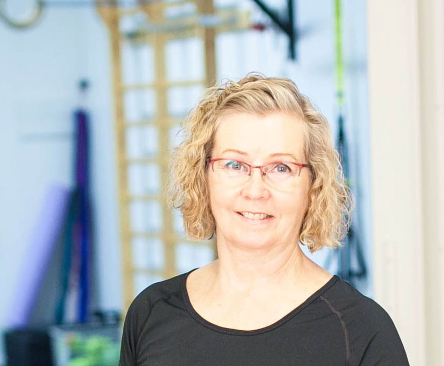
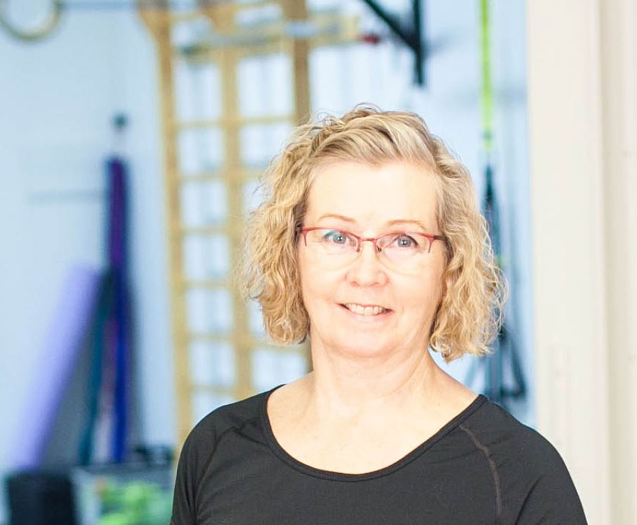

Palvelut
Koulutus ja tausta
- Fysioterapeutin tutkinto 1986
- Yrittäjänä vuodesta 1998
- FISAF-Personal Trainer 2006
Olen järjestänyt liikunta- ja hyvinvointimatkoja jo vuodesta 2012. Pitkäaikainen kumppanini on matkatoimisto Kon-Tiki Tours, joka tarjoaa hyvinvointimatkoja yhteistyössä alan huippuammattilaisten kanssa.
Hyvinvointimatkojeni ohjelma koostuu muun muassa:
- Vesijumpasta
- Joogasta
- Mindfulnessista
- Retriitistä
- Vaelluksesta ja patikoinnista
- Hyvästä ruuasta ja viihtyisästä majoituksesta unohtamatta
Jokainen hyvinvointimatka on tarkkaan suunniteltu, ja sinun ei tarvitse kuin hypätä kyytiin! Lue myös tyytyväisten asiakkaitteni kommentit ja kokemukset matkoista referenssit-osiosta.
 

Ota yhteyttä ja jutellaan lisää seuraavasta matkastamme!
Anne Setälä